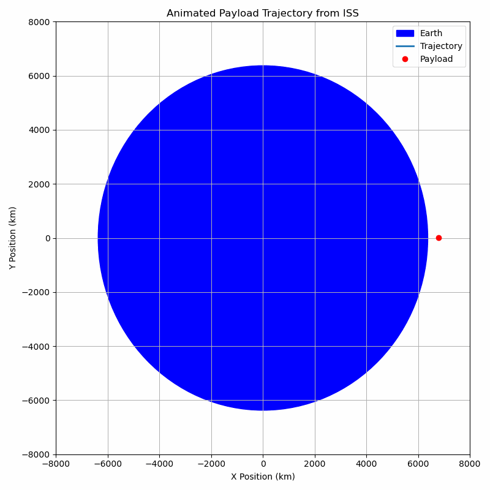
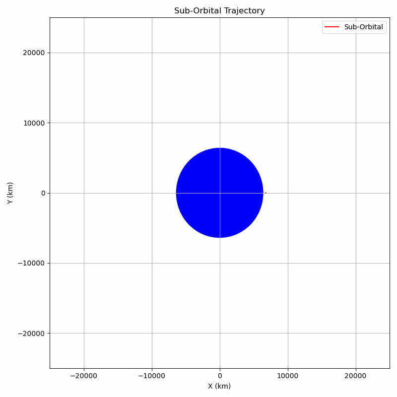

Problem 3. Analyzing Possible Trajectories of a Payload Released Near Earth
When a payload is released from a moving rocket near Earth, it enters a new trajectory that depends entirely on its initial conditions — specifically, its velocity, direction, and altitude at the moment of release. The nature of this trajectory is determined by the balance between the payload’s kinetic energy and Earth’s gravitational pull.
The result will be one of several possible conic section trajectories: elliptical, parabolic, hyperbolic, or sub-orbital. These paths are not only mathematically distinct but also have critical implications for space operations, such as satellite deployment, reentry, or interplanetary missions.
1. Elliptical Trajectory
What It Is:
An elliptical orbit is a closed curved path where the payload remains bound to Earth. This is the most common type of orbit used by satellites, where the payload continues to circle the planet indefinitely (barring drag or propulsion changes).
Conditions:
- The total mechanical energy \(E = K + U\) is negative.
- The payload’s velocity at release is less than escape velocity but more than the minimum orbital speed at that altitude.
- Eccentricity \(0 < e < 1\), where \(e = 0\) is a perfect circle.
Examples:
- Satellites in Low Earth Orbit (LEO), Medium Earth Orbit (MEO), or Geostationary Orbit (GEO).
- The International Space Station (ISS).
- The Moon, in its natural elliptical orbit around Earth.
2. Parabolic Trajectory
What It Is:
A parabolic trajectory is the boundary case between elliptical and hyperbolic motion. It represents the minimum velocity required for a payload to escape Earth’s gravitational pull, without having any excess speed.
Conditions:
- The total mechanical energy \(E = 0\).
- The payload’s velocity is exactly equal to escape velocity: $$ v_{\text{escape}} = \sqrt{\frac{2GM}{R}} $$
- Eccentricity \(e = 1\).
Example:
- A theoretical spacecraft released at exactly the escape speed from Earth, heading infinitely outward, slowing down but never stopping or returning.
3. Hyperbolic Trajectory
What It Is:
A hyperbolic trajectory occurs when the payload has more than enough energy to escape Earth’s gravity. The trajectory is an open curve, and the payload will never return.
Conditions:
- Total mechanical energy \(E > 0\).
- The velocity at release is greater than escape velocity.
- Eccentricity \(e > 1\).
Examples:
- Interplanetary or interstellar probes (e.g., Voyager 1, New Horizons).
- Gravity assist maneuvers that increase speed for Solar System escape.
4. Sub-Orbital (Ballistic) Trajectory
What It Is:
In a sub-orbital trajectory, the payload doesn’t have enough horizontal speed to enter a full orbit. Instead, it rises along a curved path and eventually falls back to Earth under gravity.
Conditions:
- Total mechanical energy \(E < 0\), but trajectory intersects Earth.
- Initial speed is less than orbital velocity.
- Path is part of an ellipse, but not a closed orbit.
Examples:
- Ballistic missiles and sounding rockets.
- Space tourism flights (e.g., Blue Origin’s New Shepard).
- Capsules launched to space and returned without full orbit.
Why This Matters
Understanding these trajectories is essential in mission planning:
- Orbital missions need precise speed for stable elliptical paths.
- Escape missions (e.g., heading to Mars) must exceed escape velocity.
- Reentry missions use sub-orbital physics to safely return to Earth.
- Gravity assists exploit hyperbolic paths to increase spacecraft speed.
Every possible trajectory a payload can follow after release falls into one of these categories. These are not just abstract physics — they’re the fundamental flight paths used in satellite deployment, planetary exploration, and returning spacecraft to Earth. Mastery of these trajectories is foundational for anyone working in aerospace, astrodynamics, or space mission design.
Numerical Analysis of a Payload's Path Near Earth
Objective
The goal is to numerically compute and visualize the trajectory of a payload released from a moving spacecraft near Earth. The motion is influenced only by Earth's gravity, and we analyze how different initial velocities and positions affect the path of the payload.
I base this simulation on real orbital parameters of the International Space Station (ISS) to keep our model grounded in reality.
Physical Background
The trajectory of a freely falling object under gravity can be predicted using Newton's Law of Universal Gravitation:
Where:
- \(G\): Gravitational constant (\(6.67430 \times 10^{-11} \, \text{m}^3 \, \text{kg}^{-1} \, \text{s}^{-2}\))
- \(M\): Mass of Earth
- \(m\): Mass of payload
- \(r\): Distance from Earth's center
From Newton’s Second Law:
We numerically integrate the acceleration to compute velocity and position over time using the Euler method.
Real Data: ISS as Reference
We use real International Space Station orbital parameters to simulate a realistic release scenario:
| Parameter | Value |
|---|---|
| Altitude | ~408 km |
| Orbital Speed | ~7.66 km/s |
| Orbit Type | Circular (LEO) |
| Mass of Earth | \(5.972 \times 10^{24} \, \text{kg}\) |
| Earth Radius | \(6.371 \times 10^6 \, \text{m}\) |
Initial Conditions
- Position: \(r = R_{\text{Earth}} + 408 \, \text{km}\)
- Velocity: \(v = 7.66 \, \text{km/s}\) (tangential to surface)
- Duration: 6000 seconds
- Time Step: 1 second
These represent a scenario where the payload is released directly from the ISS.
Python Simulation
I implemented a simple 2D numerical simulation using the Euler method. At each step, the gravitational acceleration is calculated based on the current distance from Earth's center, and position and velocity are updated accordingly.
Key components: - Arrays to track position and velocity - Gravity-based acceleration calculated at each step - Integration over time to model motion
The simulation produces a closed orbital path, confirming that a payload released at ISS speed and altitude remains in low Earth orbit.

The simulation shows the trajectory computed in the simulation:
- The blue circle represents Earth.
- The curved path shows the orbital trajectory of the payload.
- Since the initial speed matches orbital velocity, the payload does not fall back or escape — it orbits stably.
This confirms the correctness of our setup and demonstrates how real mission data can be used to simulate and predict orbital motion accurately.
This numerical analysis demonstrates that:
- A payload released from ISS at orbital velocity remains in orbit.
- Adjusting the velocity slightly would change the trajectory type (e.g., sub-orbital reentry or hyperbolic escape).
- Simulations like this are vital for predicting and designing orbital maneuvers, reentry trajectories, or planetary transfers.
This analysis bridges theory and application, showing how core gravitational physics governs real spacecraft motion.
Relationship Between Trajectory Types and Spaceflight Scenarios
When an object is released near a planet or other massive body, it follows a path determined entirely by its initial velocity, direction, and altitude. These factors influence the object's total mechanical energy, which in turn dictates the nature of its trajectory.
This trajectory directly determines whether the object will:
- Enter orbit and remain bound to the planet,
- Reenter the atmosphere and fall back,
- Or escape the planet’s gravity altogether.
Orbital Insertion — Stable Bound Motion
If the object is released with a sufficient tangential speed, it will not fall back to the planet but instead will continuously "fall around" it. This is called orbital motion. The gravitational pull provides the centripetal force needed to keep it in a closed curved path.
Characteristics:
- The trajectory is an ellipse (or a circle if speed and altitude are just right).
- The object is gravitationally bound to the planet.
- Its total mechanical energy (kinetic + potential) is negative, indicating that it lacks enough energy to escape.
- This condition is called orbital insertion, where a moving object is successfully placed into a stable orbit.
Conditions:
- The object's velocity is greater than the minimum required to stay aloft, but less than escape velocity.
- The gravitational force continuously pulls the object toward the planet, curving its path into an ellipse.
Reentry — Incomplete Bound Motion
If the object is released with a velocity that is too low to achieve orbit, gravity will overcome its forward motion and pull it back toward the planet. The object follows a partial elliptical trajectory that intersects with the surface.
Characteristics:
- The trajectory is part of an ellipse, but not a full orbit.
- The object’s path intersects the planet, leading to impact or reentry into the atmosphere.
- The total mechanical energy is still negative, as the object is not escaping gravity, but it cannot sustain orbit.
Conditions:
- The velocity is less than the minimum orbital speed at that altitude.
- The object lacks enough horizontal motion to counteract gravity, so it eventually descends back.
Escape — Unbound Motion
If the object is released with a very high velocity, it may completely overcome the gravitational pull of the planet. It follows an open trajectory — either a parabola or a hyperbola — depending on how much energy it has.
Case A: Parabolic Trajectory
- The object’s total mechanical energy is exactly zero.
- This means it has just enough speed to escape, but no energy left over.
- The trajectory is a perfect parabola.
- The object slows down infinitely as it moves away, never returning.
Case B: Hyperbolic Trajectory
- The object’s total energy is positive.
- This means it escapes and keeps some kinetic energy, continuing to move indefinitely.
- The trajectory is a hyperbola.
- The object is permanently unbound from the planet’s gravity.
Conditions for Escape:
- The velocity must be equal to or greater than escape velocity: $$ v_{\text{escape}} = \sqrt{\frac{2GM}{r}} $$ where:
- \(G\) is the gravitational constant,
- \(M\) is the mass of the planet,
- \(r\) is the distance from the planet’s center.
Each of these outcomes — orbit, fall, or escape — is governed by basic energy and motion principles in gravitational fields. By controlling the speed and angle at which an object is released, we determine the kind of journey it will take.
Trajectory animations
Orbital Trajectory (Elliptical)
Initial Velocity: ~7670 m/s
In this case, the payload is given just enough tangential velocity at 400 km altitude to continuously fall around Earth without hitting it. The gravitational force provides the centripetal acceleration needed to maintain a closed curved path.
The trajectory appears smooth and symmetric — either nearly circular or gently elliptical depending on precision. The object’s total mechanical energy is negative, meaning it is gravitationally bound to Earth. This is a classic example of orbital motion.
Sub-Orbital Trajectory

Initial Velocity: ~6000 m/s
Here, the object is released with insufficient velocity to remain in orbit. As a result, it rises briefly, follows a curved path (a segment of an ellipse), and then falls back to Earth.
The gravitational pull is too strong to be countered by the object’s horizontal motion. This leads to a sub-orbital flight, where the object follows an elliptical arc that intersects with Earth's surface. This is typical for objects on reentry or ballistic flights.
Parabolic Trajectory
Initial Velocity: ~11,180 m/s
This is the exact escape velocity at the given altitude. The object has just enough energy to overcome Earth’s gravity but not a bit more. As a result, the trajectory forms a parabola — the object continually slows down as it moves away but never returns.
In energy terms, its total mechanical energy is zero, marking the precise threshold between bound and unbound motion.
Hyperbolic Trajectory
Initial Velocity: ~12,000 m/s
The payload is released with a velocity greater than escape velocity. It not only escapes Earth’s gravity but also retains some excess kinetic energy, allowing it to move away indefinitely at a nonzero speed.
The resulting trajectory is hyperbolic — an open curve. This represents unbound motion, where the object is no longer affected by the planet in any meaningful way beyond the initial encounter.